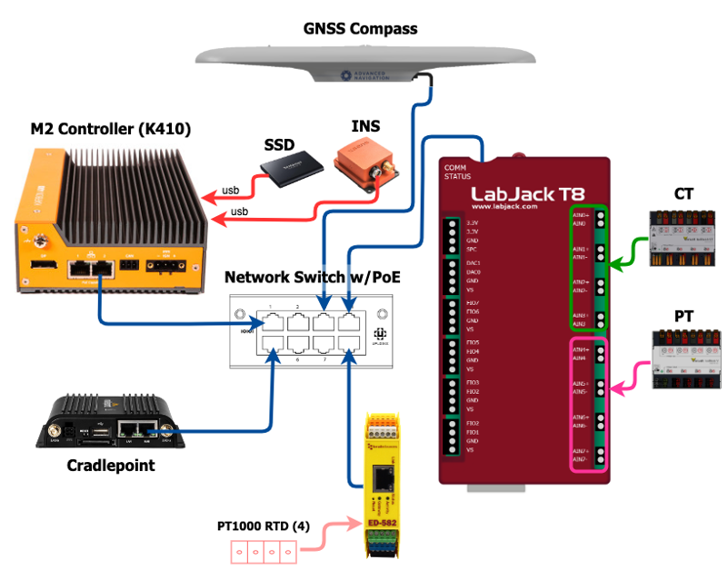

M2 Hardware  ¶
¶
This section will discuss the hardware supported by M2 and present a reference design (RD) example that is supported by the M2 source code provided in the GitHub repository. It should be noted that any hardware mentioned has been either used in or evaluated for M2 projects, however this should not be interpreted as an endorsement or approval of any mentioned hardware product by NLR. Due to the general and flexible nature of the M2 software, M2 applications are not necessarily limited to these hardware selections.
Note
Reliability, durability, and suitability of hardware selections should be assessed prior to use in applications of significance. General purpose hardware may vary in design or production tolerances that can result in operational or performance differences between units and batches.
Hardware Reference Design¶
The purpose of providing this reference design is to offer a functional demonstration of the M2 platform. Since each project tends to be unique and measurement objectives can vary considerably, there is no typical configuration that will satisfy all situations. However, there's usually significant overlap in base functionality that is common in MODAQ projects, such as: measuring analog signals, motions, position, and temperatures.
The following is a diagram of the M2 Reference Design discussed in these pages.

Equipment List
| Brand | Model | Qty | Description |
|---|---|---|---|
| OnLogic | Karbon 410 | 1 | Controller |
| LabJack | T8 | 1 | Multi-I/O |
| Perle | IDS-710HP1 | 1 | PoE/PTP Ethernet Switch |
| Cradlepoint | IBR-600C2 | 1 | LTE Modem |
| Adv. Nav. | GNSS Compass | 1 | Heading, GPS, PTP Server |
| Xsens | MTi-G-710 | 1 | Inertial Sensor |
| Verivolt | IsoBlock V-4c | 1 | Voltage Sensor (PT) |
| Verivolt | IsoBlock I-ST-4c | 1 | Current Sensor (CT) |
| BrainBoxes | ED-582 | 1 | RTD to Ethernet |
| Samsung | T5 | 1 | SSD Storage |
Modular Architecture¶
M2 is designed with a modular approach that enables flexible hardware configurations and use of devices from various manufacturers and connection types.
Many of the devices supported in this RD communicate with the controller over ethernet (TCP/IP). Ethernet brings the following advantages:
- Connection simplicity: Devices can be connected using standard networking components
- PoE: Some devices may support Power over Ethernet, which further reduces the wiring complexity.
- Flexible hardware placement: I/O modules that are TCP/IP capable can be moved closer to the measurement location, which reduces sensor/instrument wiring run lengths and the likelihood of signal corruption from noise sources. An M2 can be architected in zones or as a distributed system.
Note
Ethernet is non-deterministic and may not be suitable in time-critical applications that rely on precision timing and synchronization. Read more here.
Controller¶
M2 currently supports controller hardware based on the x86_64 CPU architecture. Examples of such CPUs include the Intel Pentium, Atom, and Celeron series chips, as well as higher-powered variants in the Core series. Some considerations for CPU selection include:
- Power efficiency
- Performance expectations
- Number of processing cores and threads
The controller main board will include a preinstalled CPU. Some main boards may offer a CPU selection, however most do not. When selecting a main board, it's necessary to balance onboard features and specifications against the CPU capabilities.
Depending on the application, the main board might be sold as a Single Board Computer (SBC) or be prepackaged in an enclosure or case (e.g. industrial PC). It's recommended to avoid general-purpose consumer oriented boards and instead look for boards targeted for industrial or embedded applications. Some devices marketed for 'Edge' computing may also be suitable. Desireable features in a main board might include:
- Minimum of 4 GB RAM
- M.2 slots that support NVMe (or SATA) SSD storage
- Multiple USB ports (3.0 or greater preferred)
- At least one gigabit (or better) ethernet port
- Video display interface
- Precision Time Protocol (PTP, IEEE 1588v2) support in ethernet controller (e.g. Intel i210)
- Real Time Clock (RTC) with battery backup
- Serial communications port (RS-232/RS-485/UART)
- Wide input voltage tolerances
Depending on the operating environment, it might be desireable to select a model that is rated for a wide operational temperature and humidity range.
Note
The above features are preferred, but not mandatory. Individual use-cases and performance requirements may indicate need for greater or fewer capabilities.
The following are examples of some controller options that have been evaluated for M2.
Onlogic Karbon 410¶
 While there are many vendors that sell ready-made rugged, industrial computers, we selected the relatively low-cost and modestly equipped Karbon 410 from Onlogic for evaluation as a mid-range M2 controller.
While there are many vendors that sell ready-made rugged, industrial computers, we selected the relatively low-cost and modestly equipped Karbon 410 from Onlogic for evaluation as a mid-range M2 controller.
The Karbon 410 is a fanless design and comes in a heavy-duty rail-mountable enclosure with a large passive heatsink. Specification-wise, it includes all of the desirable features listed in the previous section and can be optioned with either GPIO or two serial ports (RS-232/422/485).
Some notable features of the K410:
- Choice of either a dual or quad core Atom CPU
- Intel i210 ethernet controllers support PTP
- 9-48 VDC input power range
- Carries numerous regulatory certifications, including for shock and vibration
- Full-stress power draw (when equipped with Atom x6211E CPU) is <15W and can deep sleep <<1W
ODROID H3¶
 The ODROID H3 is a very low cost fanless single board computer with a quad core Celeron N5105 CPU. it's a basic, moderately powered performer that lacks the ruggedization and certification bona fides of the K410, however it's versatile and well equipped.
The ODROID H3 is a very low cost fanless single board computer with a quad core Celeron N5105 CPU. it's a basic, moderately powered performer that lacks the ruggedization and certification bona fides of the K410, however it's versatile and well equipped.
Some notes on the H3:
- Small 110x110mm footprint
- Dual SODIMM DDR4 RAM slots and one NVMe m.2 slot
- PTP support on the Realtek RTL8125B ethernet controllers requires some effort and not as robust as the Intel ethernet controllers.3
- Supports input power in the range of 14-20 VDC, which is a little unusual.
- Full stress power consumption is ~18W and <1W in suspend mode
Sensors, Instruments, and I/O Options¶
The M2 Reference Design includes support for the following devices:
- LabJack T8
- Xsens MTi-G-710 GNSS/INS
- Advanced Navigation GNSS Compass
- Brainboxes ED-582
These provide the following capabilities:
- ±10 VDC analog input and output
- 4-20 mA current loops
- Logic level digital input and output (also known as TTL or DIO)
- Position, heading, velocity, acceleration, rotation, and orientation
- IEEE-1588v2 PTP time server
Note
The devices listed will work on either controller mentioned in the previous section.
M2 supports considerably more hardware options than are included in the Reference Design distribution. Contact us to learn more.
LabJack T8¶

The LabJack T8 provides a lot of useful I/O in a single highly performant ethernet or USB connected device.
Some highlights:
- 8 simultaneous sampling 24-bit analog to digital converters (ADC), with channel-to-channel isolation and sampling up to 40 kHz
- Up to 20 channels of digital I/O (DIO)
- USB or ethernet connectivity- can also be powered by USB or PoE
- Available option for 14-bit ±10 VDC digital to analog (DAC) output
- Available option for 4-20 mA current loop input
The Reference design includes nodes to stream the ADC channels at up to 40 kHz or read the channels on demand. It also includes nodes to command an output voltage to the DAC module and read/write to the DIO.
BrainBoxes ED-582¶

The ED-582 is a simple solution for acquiring up to 4 RTD measurements over an ethernet connection. Each channel can be configured independently for either PT100 or PT1000 temperature sensors and their associated temperature coefficients.
It has 16-bit resolution and can acquire at up to 5 samples per second- which provides just over 1 Hz sample rate with all 4 channels enabled.
Xsens MTi-G-710¶
 The world of inertial sensors has a very broad price, performance, accuracy, and quality spectrum, ranging from cheap hobby grade to high-end, export-controlled devices costing many 10's of thousands of dollars. We tend to specify 'moderately' priced models such as the Xsens MTi-G-710 in many projects.
The world of inertial sensors has a very broad price, performance, accuracy, and quality spectrum, ranging from cheap hobby grade to high-end, export-controlled devices costing many 10's of thousands of dollars. We tend to specify 'moderately' priced models such as the Xsens MTi-G-710 in many projects.
This device uses a sensor fusion engine to develop 3D orientation solutions using GNSS satellite signals and built-in 3-axis accelerometers, gyros, and magnetometers.
Advanced Navigation GNSS Compass¶
The M2 reference design includes support for the GNSS Compass from Advanced Navigation. This ethernet connected, PoE powered device includes a GNSS satellite receiver with RTK support, built-in dual antennas, and a PTP time server.
This device is a compliment to the Xsens Mti-G-710, since the GNSS Compass, with it's dual antennas can provide a superior heading estimate and with an RTK correction signal available, can provide can provide superior positioning estimates. In addition, it can provide an estimate of heave and provides a highly accurate time reference for the M2 system.
-
Cheaper unmanaged switches could be substituted if PTP and/or PoE support not desired. ↩
-
IBR-600C has been recently discontinued. S700 looks like the most likely replacement. ↩
-
The newly released ODROID H4 comes with Intel I226-V ethernet controller chips, which have much better PTP support. ↩